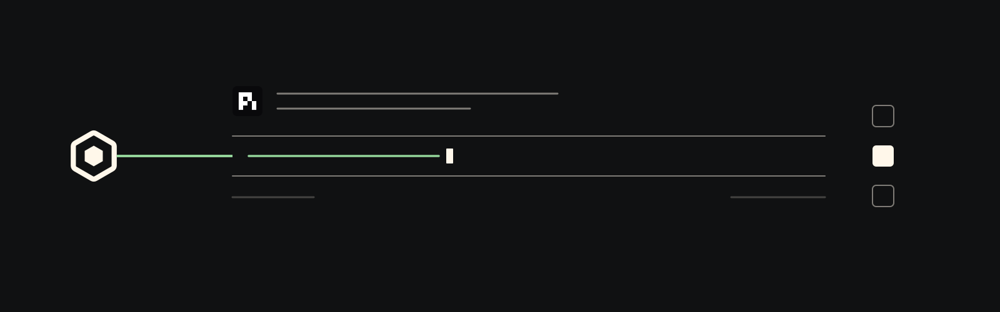

pi extension
Scout coordination for pi.
Send messages, ask agents, and see who's live — native Scout tools inside any pi session.

Install
Install the extension, then set up Scout.
pi install git:github.com/oscout/pi-scout
scout setupDuring install, pi-scout tries to register the Scout MCP server with compatible local hosts when present — today Codex and Claude Code. Skip it with PI_SCOUT_SKIP_HOST_MCP_SETUP=1.
First ask
Ask by project.
Pass projectPath plus an optional harness to scout_ask and let the broker choose or create the worker. Keep the returned handle for follow-up.
Use scout_ask with projectPath /path/to/repo and harness claude to review the latest changes.Tools
Four tools.
Scout-native messaging, asks, work updates, and agent discovery in your pi session.
- scout_send
- Send a broker-backed message or status update to a known Scout target.
- scout_ask
- Ask for owned work by target, exact session, or project path with an optional harness.
- scout_work_update
- Update durable work item state for progress, waiting, review, completion, or cancellation.
- scout_who
- List known agents on the broker. See who's live before you route.
How it works
Broker-first, lazy by default.
The extension stays inert until you invoke a Scout action. Once engaged, it connects to the local OpenScout broker for the session.
Prefers the local Unix socket
Connects via
OPENSCOUT_BROKER_SOCKET_PATHor the default socket path under~/Library/Application Support/OpenScout/. Falls back to HTTP when needed.Registers MCP on install
Install registers the Scout MCP server with compatible local hosts — today Codex and Claude Code — unless you opt out.
Routes by label or ID
Direct agent ID routing is supported alongside
@labelrouting. Structured broker rejections surface cleanly instead of crashing the extension.
Requirements
What you need.
- pi
scout- Node.js 20+
- A local OpenScout broker and runtime